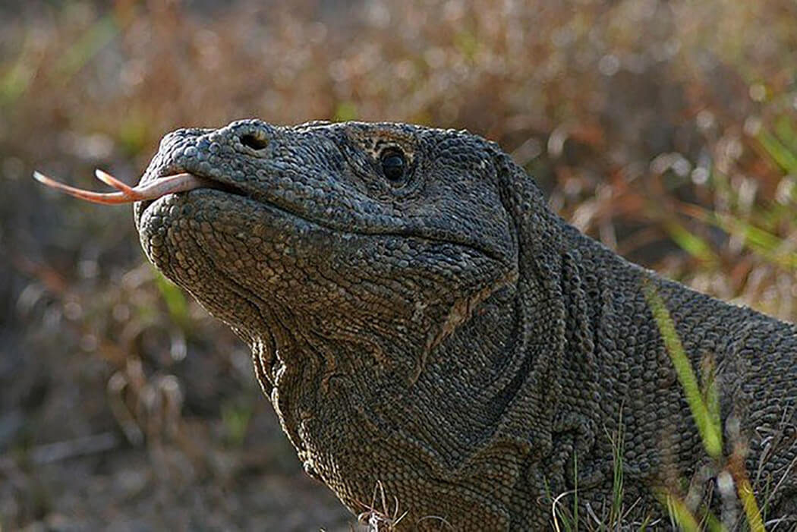

НАЦИОНАЛЬНЫЙ ПАРК КОМОДО
Национальный парк Комодо, раскинувшийся на просторах Индонезии, является частью архипелага под названием Малые Зондские острова.
Только здесь можно встретить крупнейшую популяцию драконов Комодо, особи которой представляют собой гигантских ящериц, считающихся крупнейшими на планете.

Национальный парк Комодо — одно из самых загадочных и по-настоящему девственных мест в Индонезии.
Он состоит из трех крупных островов (главный Комодо, а также Ринко и Падар) и трех десятков мелких. Общая площадь парка — 1733 кв. км, и только треть занимает суша.
Комодо был основан в 1980 году с целью защитить от вымирания Комодского варана — крупнейшую ящерицу в мире.
Некоторые представители вида могут весить 80 кг и достигать 3 м в длину. Аборигены называют этого варана «наземным крокодилом».
Ландшафты парка достаточно разнообразны. Белоснежные песчаные пляжи,
прибрежные коралловые рифы,
холмистая саванна без единого деревца и зеленая растительность на высоте от 500 м.
В этих местах, помимо варанов, можно встретить буйволов, кабанов, диких лошадей, обезьян, оленей, змей, некоторые из которых ядовиты, а также множество видов птиц.
По мнению некоторых исследователей, именно крупные земноводные ящеры Комодо послужили прообразом для мифических драконов, легенды о которых так любили китайские мореплаватели.
Согласно догадкам других экспертов, драконы Комодо являются непосредственными родственниками динозавров, несмотря на то, что с последними их мало что роднит.

ВВЕРХ